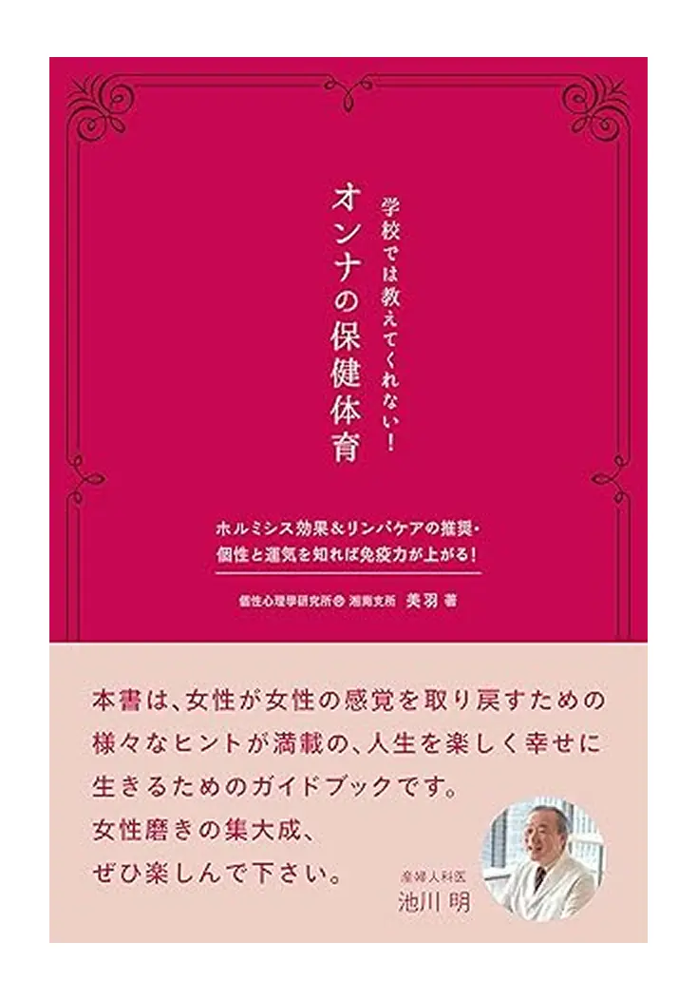

学校ではおしえてくれない！
オンナの保健体育
女性が女性の感覚を取り戻すための様々なヒントが満載。
女性磨きの集大成となり、人生を楽しく幸せに生きるための
ガイドブック。女性を元気にするバイブル!
幸せな結婚を望む方、自分の幸せはなんだろうと考えている方、
これから結婚する人はもちろん、既に結婚した人にとっても、
気持ちを新たにしたいと感じる時におすすめの1冊!
著者の美羽は、健康美研究家として、リンパケアや
個性心理學を通じて女性の心身を支えてきました。
本書には、その経験と、
女性が自分らしく輝くための想いが込められています。